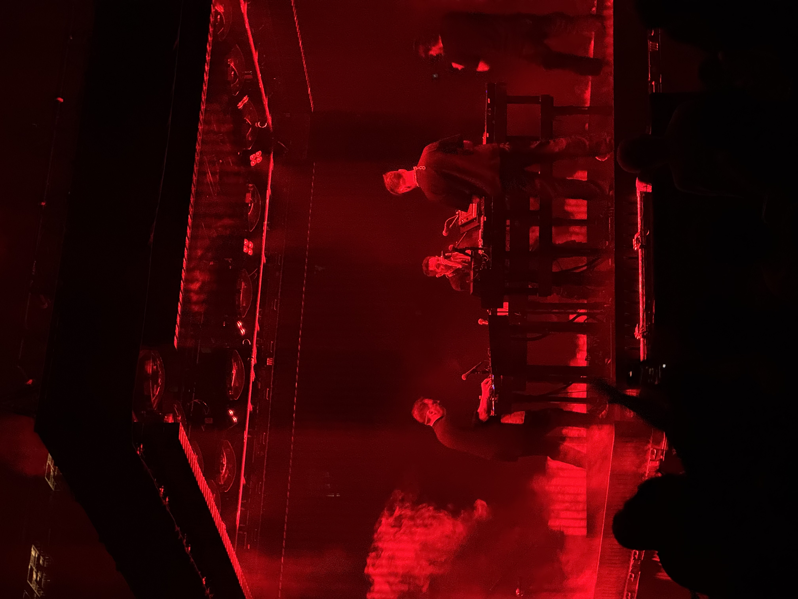

Ro's Favorite Authors and Books
Web Basics Project, Spring 2026
Other Favorites of Mine
I'm not only obsessed with books! I also love movies and tv, gaming, and music. Here are some of my favorites of each:
- Movies
- To Wong Foo, Thanks for Everything! Julie Newmar
- Army of Darkness
- Beetlejuice
- Mad Max: Fury Road
- Everything Everywhere All At Once
- Dredd
- The Lord of the Rings (all three! I shan't choose just one)
- Bram Stoker's Dracula
- Rogue One
- TV Shows
- Murderbot (yes, this is an adaptation of the book series by Martha Wells!)
- Adventure Time
- Doctor Who
- Andor
- The Venture Brothers
- Schitt's Creek
- Metalocalypse
- Video Games
- The Last of Us Parts I and II (both are amazing even if Part II is emotional torture)
- The Legend of Zelda: Breath of the Wild
- Diablo IV
- God of War
- Ghost of Tsushima
- Stardew Valley
- Baldur's Gate 3
- Horizon: Zero Dawn
- Music
- Nine Inch Nails - I am OBSESSED and if I'm listening to music, 99% of the time its NIN
- Radiohead
- PJ Harvey
I've seen Nine Inch Nails live 3 times in the last year - here is one of my favorite pictures that I took on September 3, 2025 in Brooklyn, NY:
